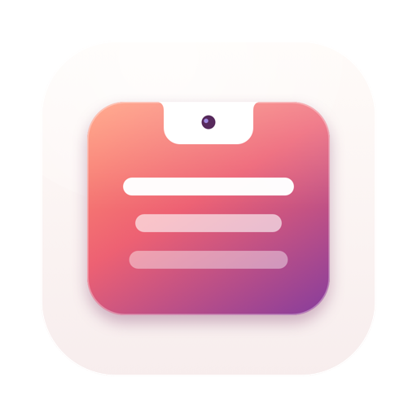
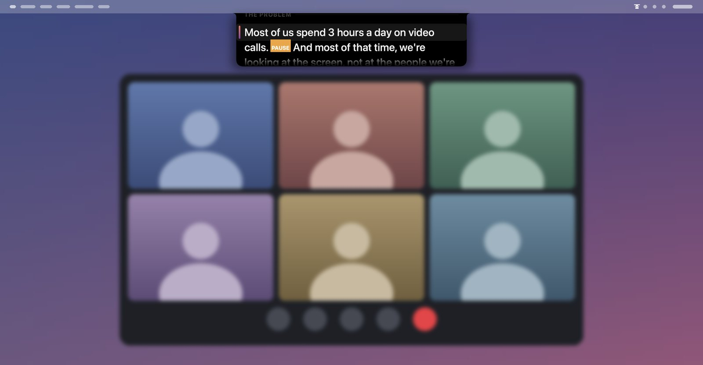

렌즈를 똑바로 응시하세요.
카메라 바로 아래에서 대본을 읽으세요.
카메라 바로 아래에서 원고를 읽으세요.
여러분 안녕하십니까, 오늘 발표에 참석해 주셔서 감사합니다.
미소 😊 팀 전체와 함께 나눌 뜻깊은 소식이 있습니다.
2초 쉼 이번 분기 진행 보고서에서 보시다시피...
전 부서에 걸쳐 생산성이 45% 이상 증가했습니다.
헌신해 주신 모든 팀원분들께 진심으로 감사드립니다.
Keynote / Zoom 회의 / 발표 화면
공유 중인 슬라이드나 발표 자료가 여기에 표시됩니다. Prompette는 웹캠 바로 아래에 깔끔하게 자리 잡습니다.

세 가지 스마트 스크롤 모드
엄격한 발표 시간을 맞추거나 자연스럽게 말할 때도, Prompette가 호흡에 맞춥니다.
Prompette는 MacBook 노치에 매달린 가느다란 띠에 원고를 보여 줍니다. 카메라 바로 아래라서 통화, 녹화, 발표 중에도 시선이 렌즈 가까이에 머뭅니다. 화면 공유나 화면 녹화에는 절대 나타나지 않습니다.
- 세 가지 스크롤 방식. 직접 정한 속도로, 목소리 크기를 감지해 말하는 동안에만, 또는 전부 Mac에서 처리되는 음성 인식으로 말하는 내용을 따라 단어 단위로.
- 원고 라이브러리. [PAUSE], [SLIDE 3] 같은 큐 표시를 넣을 수 있고, 텍스트, Markdown, RTF, Word 파일에서 가져올 수 있으며, 리허설 타이머가 어디서 시간이 길어졌는지 보여 줍니다.
- 휴대폰이나 태블릿이 리모컨으로. 내 네트워크를 통해 iPhone, iPad, Android 기기에서 시작, 일시정지, 속도 변경, 다음 큐로 이동을 할 수 있고, 기기 자체를 작은 텔레프롬프터로 쓸 수도 있습니다.
- 모든 Mac에서 작동합니다. 노치가 없으면 띠가 화면 위쪽 가운데에 놓입니다.
macOS 14 Sonoma 이상이 필요하며, iPhone 및 iPad 앱은 iOS 17 이상, Android 앱은 Android 8.0 이상이 필요합니다. 한 번 구입하면 Mac, iPhone, iPad에서 모두 쓸 수 있으며, Android 앱은 Google Play에서 따로 구입합니다.
거추장스러운 스튜디오 장비 없이 자연스러운 시선 처리 완성.
| 비교 항목 | 기존 유리 반사식 프롬프터 | Prompette |
|---|---|---|
| 하드웨어 비용 | 하프미러 글라스 및 리그 구비에 20~70만 원 | 추가 하드웨어 구매 비용 0원 |
| 설치 시간 | 삼각대 및 모니터 정렬에 15~30분 소요 | 1클릭 실행 (노치 바로 아래에 위치) |
| 화면 공유 보안 | 보조 모니터 필수 또는 창 노출 위험 | Zoom, Teams, OBS 공유 시 100% 완벽 숨김 |
| 스크롤 제어 | 발 페달 또는 번거로운 수동 리모컨 | 목소리 크기 반응, 기기 내 음성 인식, iPhone 리모컨 |
| 휴대성 | 유리가 깨지기 쉬워 무거운 전용 가방 필요 | Mac 메뉴 막대에 가볍게 상주 |
한 문단으로 보는 개인정보 보호
Prompette에는 계정도 추적도 없으며, 원고나 목소리를 어디에도 보내지 않습니다. 마이크는 Mac에서만, 사용자가 고른 음성 모드와 따라가기 모드에서 쓰이고, 음성은 Mac에서 인식됩니다. 휴대폰이나 태블릿의 리모컨은 내 로컬 네트워크로만 Mac과 통신합니다. 자세한 내용은 개인정보 처리방침에 있습니다.
같은 개발자의 다른 앱
한 가지 일을 제대로 하도록 만든 작은 앱들입니다. 계정도 광고도 없고, 어떤 앱도 사용자를 추적하지 않습니다.
 Statuette메뉴 막대에서 보는 CPU, 메모리, 디스크, 네트워크.Mac
Statuette메뉴 막대에서 보는 CPU, 메모리, 디스크, 네트워크.Mac Tockette메뉴 막대에서 한 번 끌면 시작되는 타이머.Mac
Tockette메뉴 막대에서 한 번 끌면 시작되는 타이머.Mac Zonette필요한 모든 시간대를 클릭 한 번으로.MaciPhone 및 iPadAndroid
Zonette필요한 모든 시간대를 클릭 한 번으로.MaciPhone 및 iPadAndroid Lunette달과 해를 한눈에.MaciPhone 및 iPadAndroid
Lunette달과 해를 한눈에.MaciPhone 및 iPadAndroid Lunarette네 가지 전통의 음력 달력.MaciPhone 및 iPadAndroid
Lunarette네 가지 전통의 음력 달력.MaciPhone 및 iPadAndroid Pausette눈과 허리를 위한 부드러운 휴식.Mac
Pausette눈과 허리를 위한 부드러운 휴식.Mac Poisette착용한 AirPods가 바른 자세를 알려 줍니다.MaciPhone 및 iPad
Poisette착용한 AirPods가 바른 자세를 알려 줍니다.MaciPhone 및 iPad Hushette반복되지 않는 차분한 주변 소리.MaciPhone 및 iPadAndroid
Hushette반복되지 않는 차분한 주변 소리.MaciPhone 및 iPadAndroid Tapsody타이핑할 때 들리는 기계식 키보드 소리.Mac
Tapsody타이핑할 때 들리는 기계식 키보드 소리.Mac Thrumline메뉴 막대에서 실시간으로 보는 심박수.Mac
Thrumline메뉴 막대에서 실시간으로 보는 심박수.Mac NightjarMac을 깨어 있게. 정직하게.Mac
NightjarMac을 깨어 있게. 정직하게.Mac Umbrette작업 중인 창만 빼고 모두 어둡게.Mac
Umbrette작업 중인 창만 빼고 모두 어둡게.Mac Tallette계산을 위한 종이 테이프.MaciPhone 및 iPadAndroid
Tallette계산을 위한 종이 테이프.MaciPhone 및 iPadAndroid Probette미디어 파일의 모든 기술 정보를 쉬운 말로.MaciPhone 및 iPadAndroid
Probette미디어 파일의 모든 기술 정보를 쉬운 말로.MaciPhone 및 iPadAndroid Bindette오디오 파일을 제대로 된 오디오북 한 권으로.MaciPhone 및 iPadAndroid
Bindette오디오 파일을 제대로 된 오디오북 한 권으로.MaciPhone 및 iPadAndroid Lettrettewinmail.dat 및 .msg 파일을 보낸 그대로 엽니다.MaciPhone 및 iPad
Lettrettewinmail.dat 및 .msg 파일을 보낸 그대로 엽니다.MaciPhone 및 iPad Nhanh Tay네 개의 답을 순서대로. 빠르게.MaciPhone 및 iPadAndroid
Nhanh Tay네 개의 답을 순서대로. 빠르게.MaciPhone 및 iPadAndroid Pinette늘 눈앞에 두는 메모.MaciPhone 및 iPadAndroid
Pinette늘 눈앞에 두는 메모.MaciPhone 및 iPadAndroid Usagette메뉴 막대에서 보는 Claude 사용 한도.Mac
Usagette메뉴 막대에서 보는 Claude 사용 한도.Mac Squiggo다정한 친구와 함께 그려요.MaciPhone 및 iPadAndroid
Squiggo다정한 친구와 함께 그려요.MaciPhone 및 iPadAndroid Foreman현장 일을 위한 작업, 견적, 청구서.MaciPhone 및 iPadAndroid
Foreman현장 일을 위한 작업, 견적, 청구서.MaciPhone 및 iPadAndroid Tilewake그림이 깨어나는 슬라이딩 퍼즐.MaciPhone 및 iPadAndroid
Tilewake그림이 깨어나는 슬라이딩 퍼즐.MaciPhone 및 iPadAndroid Chăm luyện베트남 초등학생 연습 문제, 소리 내어 읽어 줘요.MaciPhone 및 iPadAndroid
Chăm luyện베트남 초등학생 연습 문제, 소리 내어 읽어 줘요.MaciPhone 및 iPadAndroid